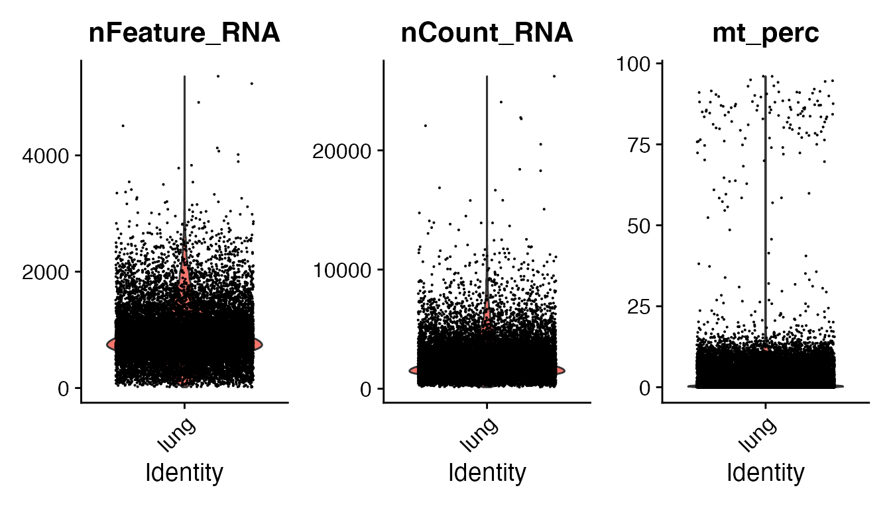
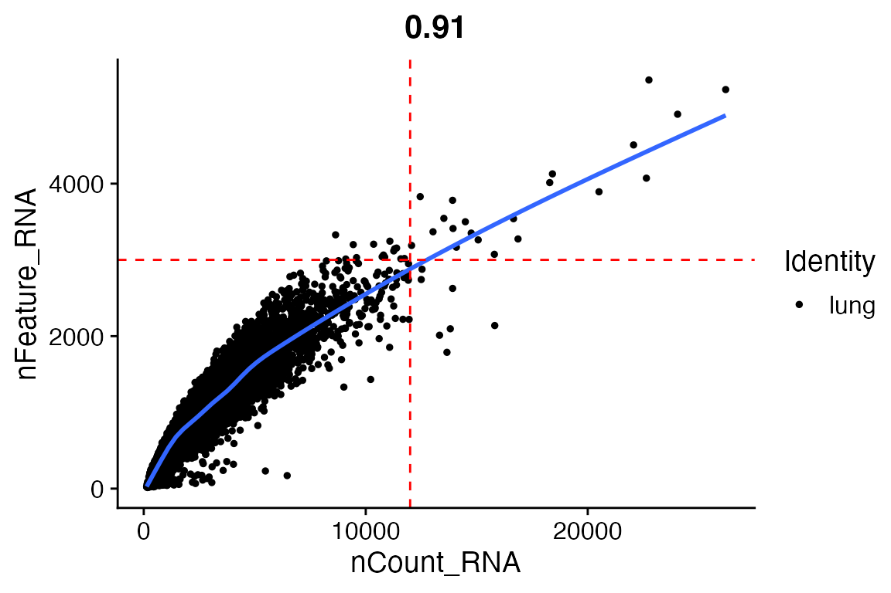
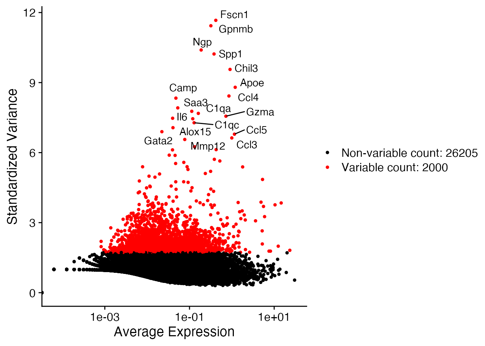

vignettes/intro_sc_analysis.Rmd
intro_sc_analysis.RmdIn exploring and analyzing single cell RNA sequencing data, there are a number of key concepts, such as filtering, scaling, dimensionality reduction, hypothesis testing, clustering and visualization, that need to be understood.
The idea behind this small session is to provide tools to start analyzing a single cell RNA-seq dataset, we are going to focus on how to utilize the R package Seurat to provide a dimensionality reduction visualization. These notes are based on this tutorial
There are many steps involved in analyzing a single cell RNA-seq experiment. Usually, we start by aligning the sequence reads into a reference genome to quantify the number of reads mapped to each gene. This results into a table of counts, which we are going to use to perform statistical analysis using R. For single cell RNA-seq data, there are many tools to perform this step, but today we are going to utilize from an already curated dataset, and show how to process it with the R package Seurat.
First, let’s load all the packages we will need to analyze the data:
First, we need to download a dataset. Fortunately, the scRNAseq package provides a variety of already curated datasets:
lung_data <- ZilionisLungData("mouse") colnames(lung_data) <- make.unique(colnames(lung_data), sep = "_") colData(lung_data)[["Barcode"]] <- colnames(lung_data) logcounts(lung_data) <- as.matrix(log10(1 + counts(lung_data))) lung_data <- as.Seurat(lung_data, project = "lung")
Now, Seurat provides all sorts of useful information on our dataset:
lung_data #> An object of class Seurat #> 28205 features across 17549 samples within 1 assay #> Active assay: RNA (28205 features, 0 variable features) #> 1 dimensional reduction calculated: SPRING
To access the metadata, i.e. information for each cell / droplet, we do:
head(lung_data@meta.data) #> Library Barcode Animal Run Tissue Used Library.prep.batch Total.counts #> bc0001 h_1_1 bc0001 h_1 1 healthy TRUE round1_20151128 11915 #> bc0002 h_1_1 bc0002 h_1 1 healthy TRUE round1_20151128 11675 #> bc0003 h_1_1 bc0003 h_1 1 healthy TRUE round1_20151128 12536 #> bc0004 h_1_1 bc0004 h_1 1 healthy TRUE round1_20151128 12499 #> bc0005 h_1_1 bc0005 h_1 1 healthy TRUE round1_20151128 9586 #> bc0006 h_1_1 bc0006 h_1 1 healthy TRUE round1_20151128 10553 #> Percent.counts.from.mitochondrial.genes Most.likely.Immgen.cell.type #> bc0001 0.210 GN_Arth_SynF #> bc0002 0.240 GN_Arth_SynF #> bc0003 2.728 MF_PPAR-_Lu #> bc0004 2.728 MF_Lu #> bc0005 2.378 MF_Lu #> bc0006 1.516 Mo_Lu #> Major.cell.type Minor.subset #> bc0001 Neutrophils N1 #> bc0002 Neutrophils N1 #> bc0003 MoMacDC Mac4 #> bc0004 MoMacDC Mac4 #> bc0005 MoMacDC Mac4 #> bc0006 MoMacDC Mono3
This is a curated dataset, thus it already contains the cell labels. At the moment we are going to assume that we don’t know that yet.
Quick note: This data could be a bit large for some laptops, so in case of trouble running this naalysis, then it could be useful to pick another dataset. To list the datasets provided by the scRNAseq package use:
Usually to do a quick quality control, the idea behind this step is that we would like to not have cells in our dataset with an abnormally large / small # of genes (we quantify the # of genes for a cell/droplet as the # of genes with at least 1 read). The reasons for them are:
First, we add a pair of QC metric to the meta.data, and the explore their distribution:
lung_data[["nCount_RNA"]] <- colSums(lung_data[["RNA"]]@counts) lung_data[["nFeature_RNA"]] <- apply(lung_data[["RNA"]]@counts, 2, function(x)sum(x > 0)) VlnPlot(lung_data, features = c("nFeature_RNA", "nCount_RNA"), ncol = 2)

Then, we compare those quantities, as expected both metrics are very correlated:
FeatureScatter(lung_data, feature1 = "nCount_RNA", feature2 = "nFeature_RNA", cols = "black") + geom_smooth(se = FALSE) + geom_vline(xintercept = 12e3, linetype = 2, colour = "red") + geom_hline(yintercept = 3e3, linetype = 2, colour = "red")

We remove the cells with more than 12K reads or more than 3K genes and normalize the data, the default method uses logarithms with a pseudo-count and a scaling factor, which could be good for a first pass. However, many more methods for normalization have been developed, thus it may is possible that there are methods more useful for different datasets.
lung_data <- subset(lung_data, subset = nFeature_RNA <= 3e3 & nFeature_RNA <= 12e3) ## writing the default parameters, explicitly lung_data <- NormalizeData(lung_data, normalization.method = "LogNormalize", scale.factor = 10000)
lung_data <- FindVariableFeatures(lung_data, selection.method = "vst", nfeatures = 5000) plot1 <- VariableFeaturePlot(lung_data, log = TRUE) top_genes <- head(VariableFeatures(lung_data), 20) LabelPoints(plot1, points = top_genes, repel = TRUE)

variable_genes <- VariableFeatures(object = lung_data) lung_data <- ScaleData(lung_data, features = variable_genes) lung_data <- RunPCA(lung_data, features = VariableFeatures(object = lung_data))
ElbowPlot(lung_data)
lung_data <- FindNeighbors(lung_data, dims = 1:10) lung_data <- FindClusters(lung_data, resolution = 0.1) #> Modularity Optimizer version 1.3.0 by Ludo Waltman and Nees Jan van Eck #> #> Number of nodes: 17514 #> Number of edges: 584247 #> #> Running Louvain algorithm... #> Maximum modularity in 10 random starts: 0.9720 #> Number of communities: 8 #> Elapsed time: 2 seconds